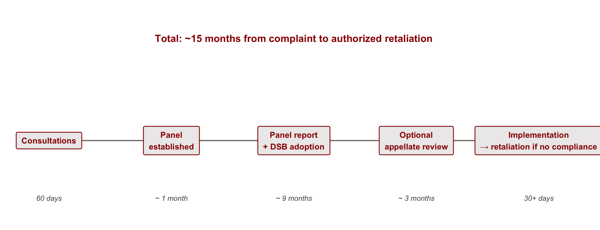

| Section | What we'll cover |
|---|---|
| 1 · Why Trade Cooperation Is Hard | The puzzle Oatley opens with — does the world still need the WTO? |
| 2 · The Economic Case for Trade | Gains from trade, comparative advantage, and why protection destroys welfare |
| 3 · The Bargaining Problem | Spatial bargaining, linkage, costly signals, and outside options |
| 4 · The Enforcement Problem | The prisoner's dilemma and why anarchy traps governments in protection |
| 5 · The WTO as Incentive-Compatible Enforcement | How iteration and reciprocity solve the cooperation problem |
| 6 · The DSM in Action: U.S.–Brazil Cotton | Brazil v. United States — how international rules work through domestic politics |
| 7 · Student article presentation | Bown & Keynes 2020 on the Appellate Body crisis |
| 8 · Writing prompt and discussion | Apply today's framework to a current case |
The Political Economy of International Trade Cooperation
INTL 503 | Chapter 3
Professor Sarah Bauerle Danzman
July 9, 2026
Today’s Plan
Today’s Big Question
Why is trade cooperation so hard even when everyone would gain — and what kind of institution does it take to make it possible?
Why Trade Cooperation Is Hard
Does the World Still Need the WTO?
For seventy years, the WTO and the GATT have anchored the international trade system. The institution is now under sustained pressure.
Signs of erosion:
- The Doha Round has produced little since 2001
- Members pursue trade goals through mega-regionals outside the WTO framework
- Aggressive bilateralism has eroded multilateral rule-making
Most analysts argue the WTO is still needed. The argument rests on a theory of international cooperation that we develop today.
Cooperation is difficult even when all parties stand to gain, because anarchy makes agreements hard to enforce.
The Economic Case for Trade
Comparative Advantage
Every country gains from trade by specializing in what it produces relatively well, even if it produces everything at higher cost than its trading partner.
What is not required
- An absolute cost advantage in any good
- The United States gains from trading with China even if U.S. firms could produce every good more cheaply
What is required
- Different opportunity costs across the same goods
- Each country specializes in the good for which it gives up less of others
- Both countries consume beyond what autarky allowed
The Production Possibility Frontier
The PPF shows everything a country could produce, given its labor and capital.
Its slope is the opportunity cost: how much of one good must be given up to make one more of the other.

China Has a Different Frontier
Same logic, different opportunity costs — because China has different factor endowments (more labor, less capital).

Trade Lets Both Consume Beyond Autarky
The two countries agree on a trade price (Oatley uses 6 shirts per computer).
Each fully specializes. Both consume on a higher indifference curve than autarky allowed.

Where Does Comparative Advantage Come From?
Ricardian model (Ricardo, 1817)
Comparative advantage comes from differences in labor productivity — i.e., technology.
Countries specialize where their technology gives them an edge.
Key insight: technology, not endowments, drives the pattern.
Heckscher-Ohlin (H-O) model (early 20th c.)
Comparative advantage comes from factor endowments — the relative supply of capital, labor, land.
- Capital-abundant countries → capital-intensive goods (autos, aircraft)
- Labor-abundant countries → labor-intensive goods (apparel)
Key insight: who owns the abundant factor wins from trade.

Trade Policy and Welfare
Standard introductory microeconomics, not in Oatley. The left panel shows the welfare consequences of opening a closed economy to trade; the right panel shows how a tariff partially reverses them.
![Two side-by-side supply-and-demand diagrams. The left panel illustrates the welfare effects of opening a closed economy to trade: as the price falls from the autarky level P to the world price P_w, the consumer-surplus area expands. Area A represents surplus transferred from producers to consumers; area B represents new welfare created by trade. The right panel shows the effects of imposing a tariff that raises the domestic price from P_w to P_t. Area A is producer surplus gained from the tariff; area C is government tariff revenue; areas B and D are deadweight loss triangles (inefficient production and forgone consumption).](day03-chapter03_files/figure-revealjs/fig-welfare-1.png)
Opening to trade transfers area A from producers to consumers and creates area B as new welfare. A tariff partially reverses this: area A is transferred back to producers as new producer surplus, area C is collected by the government, and areas B and D are destroyed as deadweight loss.
What This Theory Assumes
The standard comparative-advantage argument rests on three contested assumptions:
Market clearing
Prices and wages adjust freely; labor markets clear; no persistent unemployment.
Trade adjustment costs in practice can persist for decades and remain geographically concentrated.
Constant or decreasing returns
Markets are competitive rather than oligopolistic.
Trade in aircraft, semiconductors, and software is dominated by a small number of firms operating under increasing returns to scale.
Neutral terms of trade
Relative prices do not systematically favor some producers over others.
The Prebisch-Singer hypothesis argues that commodity exporters face deteriorating terms of trade against manufactured-goods exporters.
We will return to each of these assumptions when we cover development models and trade strategy.
Distribution Within Countries
Distributional conflict over trade is both interstate and intrastate. Country-level accounts of “winners” and “losers” obscure the within-country coalitions that produce national trade positions.
Between countries
Some countries gain more from a given agreement than others. Bargaining power determines the distribution (Section 3).
Within countries
Industries, regions, and factor owners gain and lose unevenly.
U.S. agriculture is heavily protected and subsidized despite farmers comprising roughly 1.5% of the population. The bicameral Senate gives Wyoming the same representation as California, amplifying the political power of rural producers.
Intrastate distribution is the subject of next lecture (Chapter 4). For today: “the U.S. position” in any negotiation is the position of the domestic coalition with sufficient political voice to define it.
The Bargaining Problem
Why Governments Do Not Liberalize Unilaterally
Trade gains exist in principle, but governments rarely cut tariffs without reciprocal concessions. The next slide develops a spatial model of why.
The unilateral problem
- Domestic producer coalitions lose from open markets
- Unilateral liberalization gives up domestic protection without securing foreign market access for exporters
- The government moves away from its political ideal point
The bargained alternative
- Governments exchange market-access commitments
- A spatial model (next slide) maps the trade-offs in two dimensions
- Today we focus on bargaining power and the conditions under which impasses are resolved
The Bargaining Space
Each axis is the level of tariff protection one side controls. Bargaining outcomes are points in this space.
![Two-dimensional bargaining diagram for the Doha Round. The status quo sits in the upper-right (high tariffs on U.S./EU agriculture and on G-20 manufactures). The U.S./EU ideal point is in the lower-right (high agricultural protection, low G-20 manufacturing tariffs). The G-20 ideal point is in the upper-left (low U.S./EU agricultural protection, high G-20 manufacturing tariffs). Circular indifference curves are drawn around each ideal point with radius equal to the distance from the ideal point to the status quo. The shaded intersection of the two circles is the joint-gains lens: the set of agreements both sides prefer to the status quo.](day03-chapter03_files/figure-revealjs/fig-bargaining-1.png)
Each circle is an indifference curve around one side’s ideal point, drawn with radius equal to the distance from that ideal point to the status quo. Points inside the circle are preferred to the status quo by that side. Where the two circles overlap, both sides prefer the outcome to the status quo — the joint-gains lens.
Linkage
Linkage bundles unrelated issues into a single negotiation. It is the principal mechanism by which large multilateral trade rounds reach agreement.
Why single-issue bargaining stalls
- Each side has a politically protected sector on which it will not concede
- The two-dimensional bargaining space is too narrow to contain a Pareto improvement
- Negotiations terminate at the status quo
Why bundled bargaining can succeed
- Combining agriculture, manufactures, services, and intellectual property creates room for cross-issue trade-offs
- A concession on agriculture can be offset by a gain on services
- The Uruguay Round (1986–1994) is the canonical case and produced the WTO itself
The Uruguay Round, the GATS, and the TRIPS agreement exist because linkage allowed issues that could not pass standalone to be bundled with issues on which both sides preferred movement.
Bargaining as a game of Signaling
Incentives to misrepresent
Each side has private information about its reservation price (what it would actually accept).
Revealing the truth weakens your position (other side will only offer your reservation price), so each side has every reason to misrepresent how flexible they are.
Cheap talk
Statements that cost nothing to make (“this is our final offer”) are not credible.
Because anyone could say them, they convey no information about your real position.
Costly signals
Actions that would not be taken by a bargainer with different private information.
Walking away from the table, building outside options, accepting short-term political pain — these are costly because they’re real, and that’s exactly what makes them credible.
The 2008 G-20 walkout at the Doha Round, discussed in Oatley, is the canonical illustration of a costly signal in trade bargaining.
Bargaining Power: Patience and Outside Options
The largest economy is not always the strongest bargainer. Bargaining power derives from the ability to credibly walk away from a deal, which depends on patience and outside options.
Patience
- Both sides lose utility from delay, but not equally
- A more patient government can hold out for outcomes closer to its ideal point
- Patience comes from political stability, low domestic pressure, and longer time horizons
Outside options
- After 2008, the U.S. and EU pursued TPP, TTIP, and EU-Pacific agreements
- Each RTA raises the value of WTO failure and lowers the price a country will pay for a multilateral concession
- The 2008 G-20 walkout would have worked only if the U.S. and EU lacked alternatives; the alternatives existed, and Doha did not finish
A bargainer with patience or with credible outside options can credibly walk, and therefore can credibly demand more.
RTAs as Developing-Country Leverage
Arvind Subramanian, in Trade Talks ep. 215 (Day 1 podcast), argues that RTAs are not only leverage for advanced economies. Developing countries can use them strategically against China.
The conventional view
- Outside options favor whoever holds them
- Advanced economies have historically held more of them
Subramanian’s argument
- By signaling willingness to deepen ties with non-Chinese partners, developing economies transmit a costly signal to Beijing about market access
- The mechanism is the same as in the previous slide; the direction of leverage is different
Bargaining power accrues to whichever side can credibly walk away, regardless of which side that is.
The Enforcement Problem
Reaching an Agreement Is Not Enough
Once an agreement is reached, each side has a unilateral incentive to defect: to retain its own tariffs while the other side cuts theirs. The prospect of receiving the sucker payoff (liberalizing while one’s partner does not) deters governments from signing in the first place.
The structure
- Both sides have agreed to liberalize
- Either can renege after signing
- The international system lacks a third-party enforcer
- What sustains compliance?
The model
The prisoner’s dilemma formalizes the situation:
- Mutual cooperation maximizes joint welfare
- Each player prefers to defect when the other cooperates
- Anticipating mutual defection, neither cooperates
The Prisoner’s Dilemma Applied to Trade

G-20 preference order: (P, L) > (L, L) > (P, P) > (L, P). EU is symmetric.
Best response logic
G-20
- If EU plays Liberalize → G-20 prefers Protect (yields P, L over L, L)
- If EU plays Protect → G-20 prefers Protect (yields P, P over L, P)
- Protect is therefore a dominant strategy
EU (by symmetry)
- Protect is also dominant for the EU
- Both rational players choose Protect
- The game terminates at (P, P)
Both sides know they would be better off at (Liberalize, Liberalize). Individual rationality nonetheless drives them to (Protect, Protect). The equilibrium is collectively suboptimal.
Two Properties of the (P, P) Equilibrium
Pareto suboptimal
At least one player could be made better off without making anyone else worse off.
- Both sides prefer (L, L) to (P, P)
- (L, L) is reachable in principle
- Yet they don’t reach it
Nash equilibrium
No player can unilaterally improve their payoff by changing strategy.
- G-20 deviation from (P, P) yields (L, P), its worst outcome
- EU deviation from (P, P) yields (P, L), its worst outcome
- Neither player has a unilateral incentive to deviate
Together, these properties define the cooperation problem. The (Protect, Protect) outcome is stable (no unilateral incentive to deviate) yet collectively suboptimal (both sides prefer Liberalize, Liberalize). Individual rationality produces collective dysfunction.
The WTO as Incentive-Compatible Enforcement
Iteration
A one-shot Prisoner’s Dilemma traps countries in a suboptimal equilibrium (Protect, Protect). But states are long-lasting: they play repeatedly, and often with the same partners. In an iterated Prisoner’s Dilemma, cooperation can become rational under certain conditions.
One-shot game
- Defection yields the temptation payoff once
- No future round, no future punishment
- Cooperation is irrational
Iterated game
- Defection today invites punishment tomorrow
- The stream of cooperation payoffs (L, L) can exceed a one-time defection gain
- Cooperation is sustainable if players are sufficiently patient
- This result is the Folk Theorem in game theory
Three Conditions for Cooperation (Axelrod-Keohane-Oye)
1. Iteration
The same parties must play repeatedly and expect future interactions. Without iteration, no future round can discipline present behavior.
2. Reciprocity
Players need a strategy that rewards cooperation and punishes defection. The canonical example is Axelrod’s tit-for-tat.
3. Future-orientation
Players must value future payoffs enough that anticipated punishment disciplines current behavior. A sufficiently low discount rate sustains cooperation; a high one collapses the game back to one-shot.
Robert Axelrod (1984), The Evolution of Cooperation; Robert Keohane (1984), After Hegemony; Kenneth Oye (1986), Cooperation Under Anarchy.
How the WTO Supplies These Conditions
Iteration
- Stable membership: 164 members and few exits in over seventy years
- Repeated rounds: eight completed, the ninth (Doha) ongoing
- Periodic policy reviews of every member by its peers
The same governments deal with each other repeatedly, year after year.
Reciprocity (information and standards)
- MFN and national treatment supply bright-line standards against which behavior can be evaluated
- Transparency requirements apply to trade remedies, safeguards, and non-tariff barriers
- The WTO publishes systematic data on every member’s tariffs and NTBs
Tit-for-tat requires that each side observe when its partner has defected. The WTO supplies the information.
Future-orientation is a property of governments themselves, not something the WTO can supply. When governments stop valuing future trade cooperation, the iterative logic of the institution erodes. (More on this when the student presents Bown & Keynes 2020.)
The DSM as Institutionalized Tit-for-Tat
The Dispute Settlement Mechanism (DSM) is the WTO’s formalized tit-for-tat. It legalizes retaliation, requires that retaliation be proportionate to the harm, and embeds the entire process in a predictable timeline. These features make WTO enforcement incentive-compatible: every member knows in advance the cost of defection.
Why incentive-compatible
- The cost of defection (authorized retaliation) is known in advance
- The punishment is proportional to the harm caused
- The process is transparent and rule-bound
- Governments can rationally weigh compliance against the predictable price of non-compliance
Why retaliation does not escalate
- Retaliation must be authorized by the DSB
- Magnitude is bounded by demonstrated harm
- Procedural constraints prevent the spiral that produces trade wars
The Dispute Settlement Process

Every member knows the sequence, the timeline, and the maximum cost of defection in advance. Predictability is what allows the procedure to function as enforcement.
The WTO Is Not a State
“The WTO is not an international equivalent of a state because the WTO does not have the authority or the capacity to punish governments that fail to comply.” (Oatley, p. 70)
What the WTO cannot do
- Levy fines or sanctions on a member
- Compel a member to change policy
- Override domestic law
- Maintain anything resembling a police force
What the WTO does instead
- Provides rules members have agreed to
- Provides information about compliance
- Provides a dispute mechanism that allows members to enforce agreements against one another
- Activates domestic political coalitions inside a non-compliant country (next slide)
The WTO provides infrastructure for self-enforcement among its members. This distinction matters for understanding both how the cotton case worked and why the Appellate Body crisis matters.
The DSM in Action: U.S.–Brazil Cotton
The Case at a Glance
Brazil v. United States, 2002–2014. A twelve-year DSM proceeding in which Brazil challenged U.S. cotton subsidies and ultimately forced a restructuring of U.S. farm policy.
Brazil’s complaint
- U.S. cotton subsidies (export support and domestic price and income supports) advantaged U.S. growers
- U.S. policy violated WTO rules on subsidies
- Brazilian cotton growers were harmed in global markets
U.S. response
- Cotton subsidies constitute a domestic safety net
- They protect U.S. farmers from commodity-market volatility
- They are not an export subsidy in disguise
Brazil, a developing country, brought the most powerful WTO member into compliance. The cotton case is the canonical illustration of how the DSM converts international rules into domestic political pressure.
The Cotton Case Timeline
![Horizontal timeline of the U.S.-Brazil cotton dispute from 2002 to 2014. Major milestones include the original complaint filed in 2002, the panel ruling against the U.S. in 2004, the Appellate Body upholding the ruling, the compliance panel in 2007 finding U.S. adjustment insufficient, the WTO authorizing $823 million per year in retaliation in 2009, the April 2010 settlement with $147 million per year capacity-building payments to Brazil, the 2014 Farm Bill restructuring cotton support, and final settlement in October 2014 with a $300 million lump-sum payment.](day03-chapter03_files/figure-revealjs/fig-cotton-timeline-1.png)
How the DSM Created Pressure for Compliance
The international process
- Produced a legal finding of U.S. violation
- Measured the gap between U.S. policy and WTO obligations
- Authorized retaliation up to $823 million per year
- Conferred international legitimacy on Brazil’s threat
The domestic effect in the United States
- Brazil’s threatened tariffs targeted specific U.S. exports
- Producers of those exports lobbied USG for resolution
- The Farm Bill negotiations became the legislative vehicle for compliance
WTO authorization converted international rules into domestic political pressure. The DSM did not punish the United States directly; it created domestic political incentives for U.S. industries to push their own government toward compliance.
Brazil’s Strategic Targeting
Brazil did not threaten retaliation against arbitrary U.S. exports. It targeted goods whose producers were politically organized and well-represented in Congress.
A non-strategic alternative
Tariffs on politically weak, diffuse, unorganized U.S. industries.
→ Modest economic harm to the United States → Limited political response → No domestic pressure for compliance
Brazil’s actual approach
Tariffs threatened against politically organized U.S. industries with active trade associations, lobbyists, and congressional ties.
→ Affected producers mobilized → Their lobbyists pressed Congress → Congress had political reason to compel USTR to settle
International enforcement operated through domestic political channels. Brazil used the DSM not only to establish a legal finding but to engineer a coalition shift inside U.S. politics.
Reassessing the “No Teeth” Critique
The conventional critique
- The WTO cannot directly punish a member
- It cannot compel a country to change policy
- Powerful members ignore rulings they dislike
- Therefore the WTO is toothless
What the critique overlooks
- The WTO does not need to punish directly
- It needs to make non-compliance politically costly inside the violator
- Authorized retaliation creates domestic losers from non-compliance
- Those losers do the enforcement work through their own political system
The enforcement mechanism resides in the violator’s domestic politics. The cotton case demonstrates that this mechanism works even against the most powerful WTO member, provided the institution is functioning.
Where the DSM Stands Today
The DSM is presently non-functional. The Appellate Body has lacked a quorum since December 2019; the mechanism that made the cotton case possible is, for now, dormant.
Our presenter will walk us through Bown & Keynes (2020) on how this came about and what is at stake.
Questions to hold while reading
- Why would a powerful country dismantle a system designed to constrain other powerful countries?
- What does it mean that the United States, architect of the WTO, turned against its own enforcement mechanism?
- How does this change the incentive-compatibility argument we have developed?
Article for student presentation
Bown, C. P. & Keynes, S. (2020). “Why Trump shot the Sheriffs: The end of WTO dispute settlement 1.0.” Journal of Policy Modeling 42(4): 799–819.

INTL 503 | The Political Economy of International Trade Cooperation